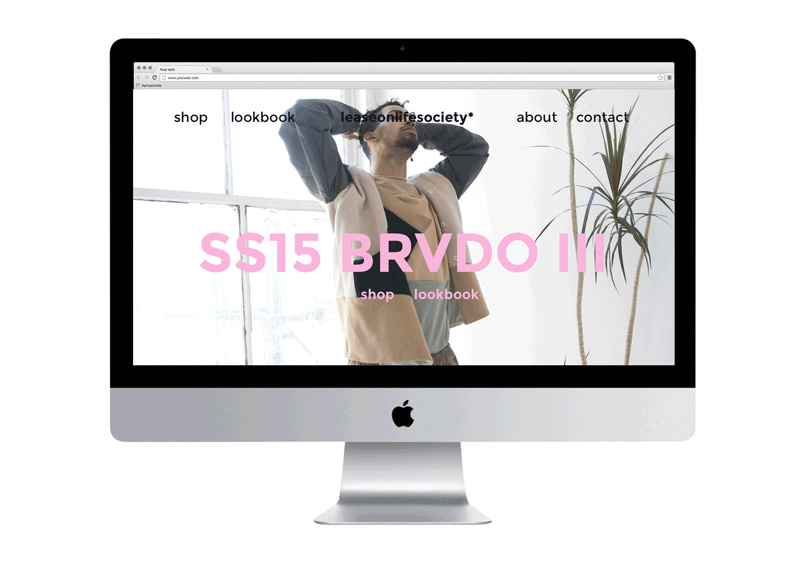
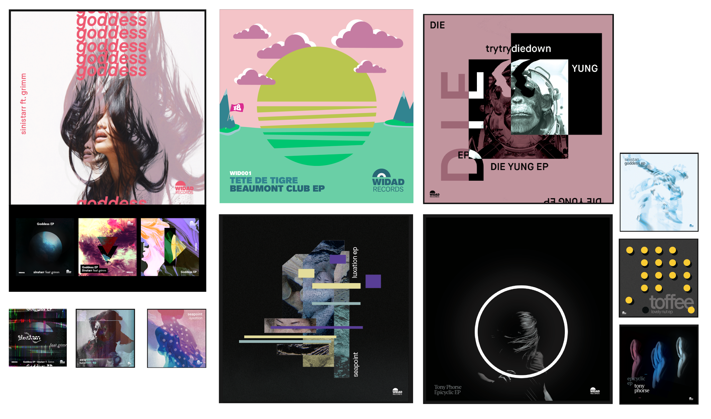

Short Bio
Ameer is a multi-disciplinary designer that has been instrumental in large, international, multi-media ad campaigns, startup and Fortune 100 app launches, groundbreaking social innovation design, experimental fashion and exhibition art. In most social circles, he's commonly referred to as "the homie that does everything." That has only made him busier—which may not always be a good thing.
Jokes aside, he's passionate about policy, visual journalism, social design, volunteering and entrepreneurship and hopes to develop programs and environments to foster a new generation of "creative humanists."
The Black and Muslim Kid
"Innnnn, west Philadelphia, born and raised, in my bedroom where I spent most of my days, chilling out, drawing and tinkering all coolin and getting in trouble doodling throughout school..."
Anyway, outside from my terrible rendition of Fresh Prince, I was an inquisitive and attentive kid (or that's what my mom would tell you). She loves to tell the story of me when I was 6 months old:
I was learning words and numbers and all that, and I had some cookies lined up in front of me. I had about six of them. My parents wanted to see if they could trip me up so my dad set a diversion while my mom took a cookie and realigned the cookies so it looked like nothing was missing. I revert my attention to the cookies...and something was amiss.
My parents gasped as I went to count my cookies (like "holy sh*t he's counting whaaaaaaaaaaaaat?) and I looked at them like "yo I know you took my cookie."
So I guess I was aware of my surroundings and of things really early on. I probably butchered the story (sorry mom) but I can see why she likes telling that story.
Anyway, my childhood was like any other kid in middle class America. Except, I'm black and Muslim. So in that sense, no Christmas, my parents were always looked at weird when we would all go out somewhere, I caught on to microaggressions and felt their pain as if it were my own and I think as an older brother, I felt such a great responsibility to be a role model to not just my brother, but my cousins too.
There's a good deal of nuance but overall, I wouldn't change it for the world.

How did you first get interested in design?
I wanted to make comic books as a kid (my friend Nikolas Draper-Ivey, lowkey has seen my work and wants me to draw so bad but I haven't given in yet!) and that led me to stumbling upon DeviantArt. I saw that they used photoshop and I found a pirated version to learn about lighting, composition, color, etc. I soon found a book about web design in a library and googled tutorials on how to make good looking websites.
But that's all the self discovery and I ended up getting into psdtuts and jumpstarted some semblance into design.
On the other hand, traditionally, my parents got me involved with the UArts program in Philadelphia, my dad's friend (a painter) gave me pointers along my journey, a friend and mentor from Singapore (Mark 'SBTG' Ong) gave me one of my first hard lessons with follow up, hard work and passion, my old mentors (Abdi Farah, Hayling Price, Anand Jahi, Isaiah Greene and more) from the UPenn program Ase, always told me to pursue art as most of them do now and I wouldn't be here without them and my family and friends to be honest.
I had the natural inclination, they ensured I took it seriously.
Tell me about the work you've done?
Currently, I work as the Senior Mobile UX Designer for HCA's IT&S division in Nashville, TN. My job consists of developing groundbreaking medical applications for HCA's hospitals, free-standing clinics and more across the iPhone, iPad, Apple TV and Apple Watch from an operational, utilitarian and enterprise focus. I also took lead to create an open-source Mobile Design framework that is currently in the process of being deployed enterprise-wide for designers and development teams across HCA's network.
Before, I've been all over the place.
- interned at R/GA under the Nike client and helped launch 6 campaigns - three of which were sneakers (KD, Kobe & LeBron)
- started a design firm and launched 12 startups in partnership with DreamIT Ventures
- built an app, featured in 95 countries, failed miserably
- worked at Audible and launched Audible Channels
What are your proudest accomplishments of your career?
Working with Nike and developing the narrative for their World Cup Campaign was awesome especially when you're an intern.
Launching a startup and failing. I learned so much from that experience, it's singlehandedly been responsible for my upward mobility in corporate jobs. Intern to Sr. Designer in two and a half years is pretty lit.
But honestly, I haven't fully begun to fulfill what life has in store for me so, these are proud moments now, I can only imagine what might happen in the future.

What have been your biggest struggles of your career?
I'm young dude. Like legit, I'll be 23 on Friday, February 10th, and so it's hard to be taken seriously sometimes. I like to dress comfortable. I wear dreadlocks with shaved sides. I embody a punk rock vibe that turns people off.
Yet, I run a design team, I've built companies before, I feel like a seasoned vet but the timeline is all wrong. I've had trouble finding the balance between personal expression and professionalism. At first glance I look as if I'm a struggling artist, and then when I speak, the conversation changes. And sometimes it doesn't. I've had to enlist my white friends to help me negotiate with business partners because that's sometimes the only way I'll win any business.
And it f*cking sucks.
What are you doing that's special that sets you apart from your careers?
I am a design advisor for the Nashville Entrepreneur Center (one of 9 google tech hubs) and am attached to the Project Music and Project Healthcare cohorts to guide companies from startup to successful exits or profitable companies. Now I'm not sure about it being super special in general, but in Nashville, it's a huge deal. There aren't many black mentors (I'm one of two active advisors - the other, a business partner) and so we are working to bring more visibility to the EC and attract POC to pursue their business goals and create a economic framework for success they can follow.
What have your experience been as a person of color in the design industry.
It's all about the environment. If you're with people who speak to you culturally, it's amazing. I worked at audible, and while I was there, the design team were the homies. They were all still like 7-10 years my senior, but they spoke my language and in kind, I could connect with them in a way I haven't found anywhere else (save R/GA).
POC have to painstakingly find an environment that speaks to us, if not, we're gonna be miserable. And since I started my design career, it's been pretty volatile ride emotionally.
How do your friends and family feel about the work you've done?
They love the fact that I work so hard and they love the work I do. But they also hate the fact that I work so much. Maybe it's not hate (that might be too strong), perhaps they know that my work ethic has lead to other abnormal behaviors like sleep deprivation, insomnia, forgetting to eat, etc. So it's more so that they want to make sure I maintain a healthy balance because sometimes in the pursuit of "innovation," I'm neglecting important areas of self-care. It's like the paradigm of working to live / living to work.
What do you love most about working in design?
Perspective. You see the world differently. Almost everything is a touch point you can access, analyze and in some cases, predict. Believe it or not (and perhaps it's due to my training), most design work is anthropological. Human factors & ergonomics for products, user experience and visual acquity for digital experiences, wayfinding and spatial awareness for physical environments—all of these have one thing in common: people. So to me, being able to see the person, the touch point, how they interact and then viewing the larger picture of each individual affecting the whole, it's pretty fascinating stuff.
What would you like to see changed about the design field?
In particular, I have two things I'd like to change:
We need more than POC recognition and representation.
We are out here. And we are talented. We are honest. We are hardworking. Most of all, we are the bedrock of culture. We need more of us in current companies, but we should also be forging more of our own. We are the champions of our voices and they need to be heard, cultivated and shared on our terms. What makes us unique are things that people cannot intrinsically copy.
I would love to see POC studios as big as R/GA, or Wieden + Kennedy. I'd love to see black product + digital design companies compete with the likes of Google, Amazon, Microsoft. I'd love to see black car companies, energy companies, in all areas of industry. And we'll get there.
Hiring more of us.
We're capable and already working toward inclusion in established work environments and I applaud those efforts (and I should do more there honestly). But it's not fast and it's tedious and annoying when you want to promote and push for diverse initiatives and yet you're the only black person or POC on your team. Why does it feel like I have to argue an insane amount of value a potential candidate could bring that looks like me, when it's not the case for anyone else? Why is it that Google spent nearly $250 mil for diverse initiatives only for it to fail?
I've got at least 12 different answers but they all boil down to the fact that we don't have enough of us in recruitment, in leadership, in management to make critical decisions for companies to honestly challenge their efforts and hiring practices.
The way companies seek talent today is outdated and there has to be a fundamental shift in company recruitment.
How can design be more accommodating to underrepresented populations of people?
We gotta be mobile and show it to em! I remember volunteering for the Black Student Association at SCAD (Savannah College of Art and Design) in conjunction with SCAD Serve to go onsite to an inner city middle schoo
You know when you ask a kid what they want to be when they grow up or what they like doing or what they want to do, and they just give you the "I don't know, I just do ______?" Well we got that. A lot.
And it wasn't until they asked us what we did when they lit up. "Wow, so you can make money drawing comic book characters?" "Wait, so you guys make all the cool stuff on billboards?" "You can learn how to make clothes?!"
The best part was, SCAD is literally blocks away. They have high school programs, they have public events, students are everywhere. A place for them to aspire to, learn from and jumpstart a career in what they might be passionate in, didn't even exist to them before. They knew about it but assumed it was for rich kids, white people or something wholly unobtainable - until people who looked like them, talked like them, felt like them, said it was possible. And it was real.
We just gotta go out there. Every designer should volunteer and volunteer often. It will change your life. It certainly has for me.
What are you working on right now, either for work or for yourself?
So In the immediate short term, I'm pretty engaged in the design community locally and am hosting the annual Global Service Jam alongside partners from Asurion, HCA, Redpepper and other local companies who champion design and design thinking.
What advice would you give to folks from similar backgrounds who are in design or hoping to get into it?
Collaborate with your peers. Challenge everything and everyone. Break the rules. Do what you want. Listen to your gut. Trust yourself.
You can't bring your whole squad with you during your journey, and it's going to suck leaving some people behind, but you have to forge forward no matter what.
Give back. Do what you can for your community. Be active. Be a voice. Be a shoulder. Lend a hand.
Like the Staple brand, be a "positive social contagion."